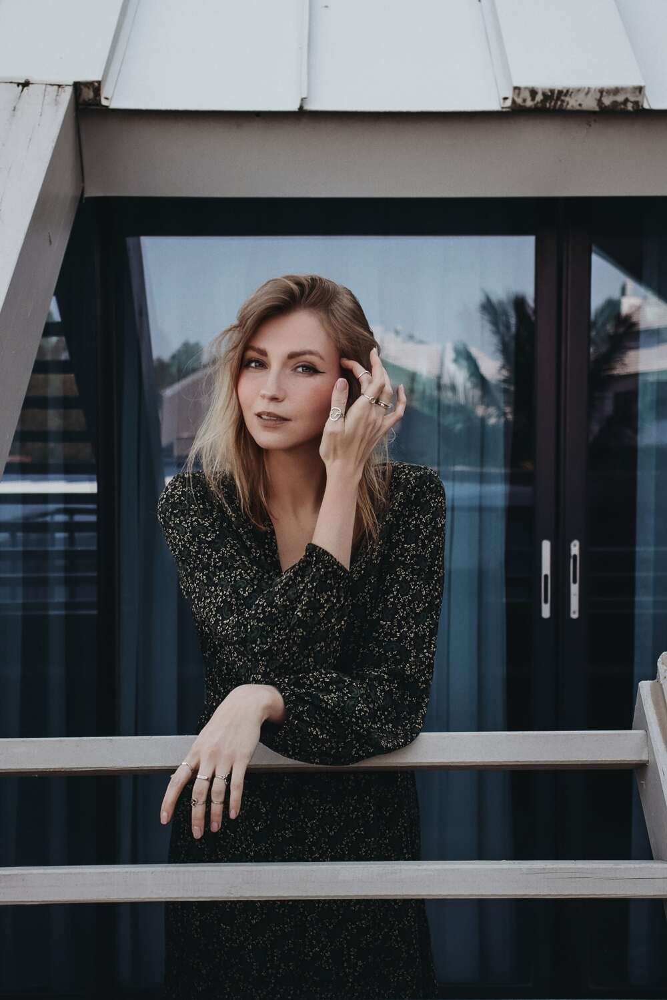
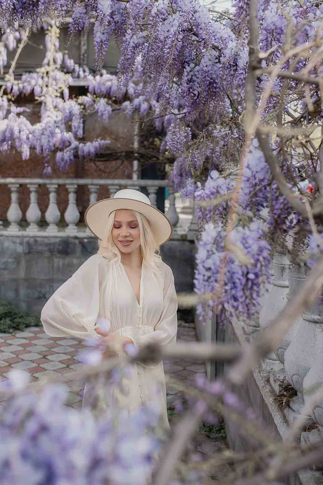
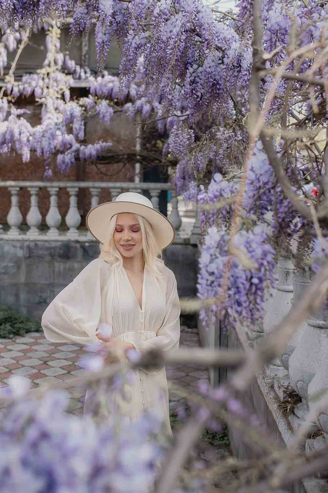
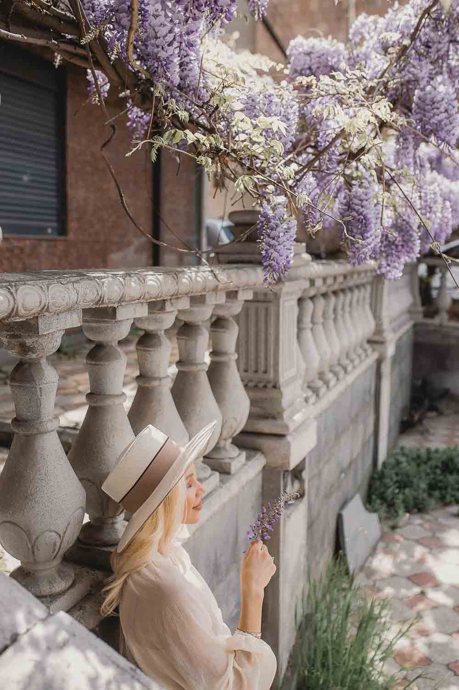
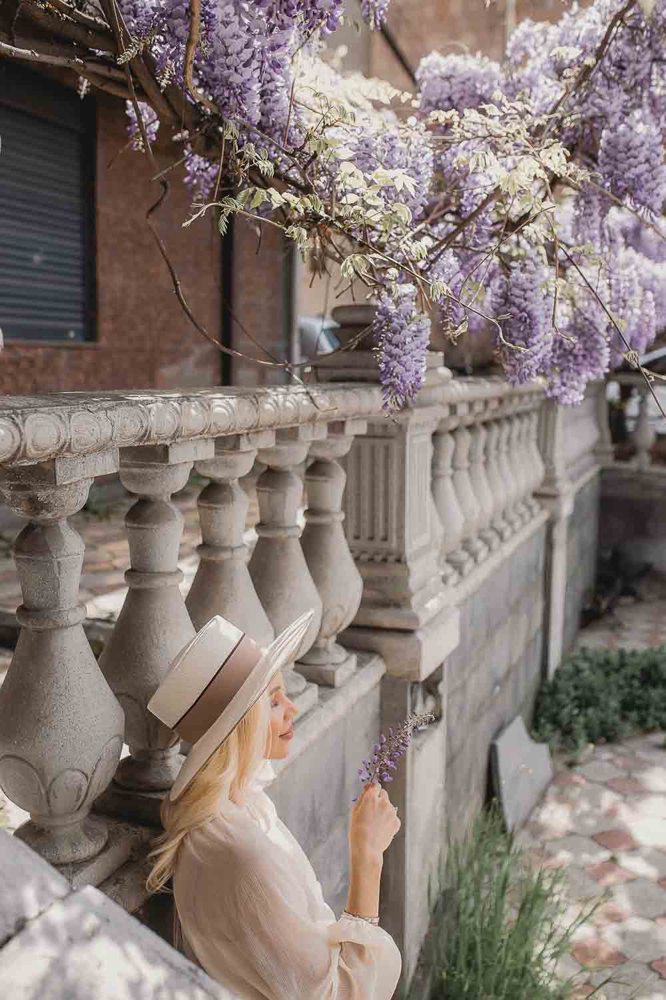

About me
Welcome to my website! I'm thrilled to have this opportunity to introduce myself and share my passion for photography with you.
I'm Vera Antamanova, a professional photographer with 5 years of experience in capturing beautiful moments and telling stories through my lens. Photography has always been my creative outlet, allowing me to freeze fleeting moments in time and preserve memories that will be with people for generations.
My journey as a photographer began when I picked up my first camera, and I instantly fell in love with the power of visual storytelling. Over the years, I have honed my skills, expanded my knowledge, and developed a unique style that blends artistic vision with technical expertise.
I specialize in portrait and family photography. I also have experience with love story and wedding photography. Whether it's capturing the love and emotions of a couple on their wedding day, immortalizing the joy and innocence of families, or creating captivating images for commercial clients, I approach each project with enthusiasm and dedication.
What sets me apart as a photographer is my commitment to establishing a deep connection with my clients. I believe that building a rapport and understanding your vision is crucial in delivering photographs that truly reflect your personality and style. I strive to create a comfortable and enjoyable environment during our sessions, allowing your genuine emotions and true selves to shine through.
Throughout my career, I have been fortunate to work with a diverse range of clients, each with their unique stories and visions. Collaborating with individuals, families, and businesses has given me invaluable insights into the power of photography in capturing milestones, conveying emotions, and creating impactful visual narratives.
When I'm not behind the camera, you can often find me exploring new locations, immersing myself in nature's beauty, or experimenting with different techniques to push the boundaries of my art. Photography is not just a profession for me; it is an ever-evolving passion that fuels my creativity and drives me to continually seek new ways to capture the world around me.
Thank you for taking the time to visit my website. I look forward to embarking on this creative journey with you and capturing moments that will be cherished for a lifetime.
Portraits
Portrait photography is all about capturing the unique personality of a person through a photograph. As a photographer, I strive to tell a person's story through my lens, whether it's a single headshot or a family portrait. My goal is to create beautiful and timeless images that capture the emotion and essence of each individual. With a passion for capturing life's beauty, I specialize in creating personalized portraits that showcase the individuality of each of my clients.


 

 



Love Story
Love story photography is an exceptional way to capture the essence of your relationship and the love you share with your partner. I aim to create stunning images that not only document your love story but also evoke emotion and capture the special moments that make your relationship unique. Whether you've just started dating or you're celebrating a milestone anniversary, my goal is to capture the magic of your love story through my lens. With a keen eye for detail and a passion for capturing the beauty of life, I specialize in creating personalized love story portraits that showcase the intimacy and joy between you and your partner.


Family Photography
Family photography is all about taking pictures of families to remember the special moments they share together. My goal is to take pictures that show how much love and happiness families have when they're together. These pictures can be taken outside or inside a studio, and the I will make sure that everyone feels comfortable and happy during the photo shoot. For me it is importaint to create pictures that are fun and capture the unique personality of each family member. These pictures will be treasured for many years to come and will remind everyone of the love and connection they share as a family.


Wedding Photography
Wedding photography is all about capturing the most important moments of your special day, creating timeless and beautiful images that you will cherish for a lifetime. I understand the unique significance of your wedding day, and I strive to capture every detail that makes it special. From candid moments to posed portraits, my goal is to document the essence and emotion of your wedding day through my lens. I believe that wedding photography is an art form that requires technical skill, creativity, and an innate ability to capture the beauty of love. With a passion for capturing the beauty and joy of life, I specialize in creating personalized wedding portraits that reflect your unique love story and the magical moments of your big day.